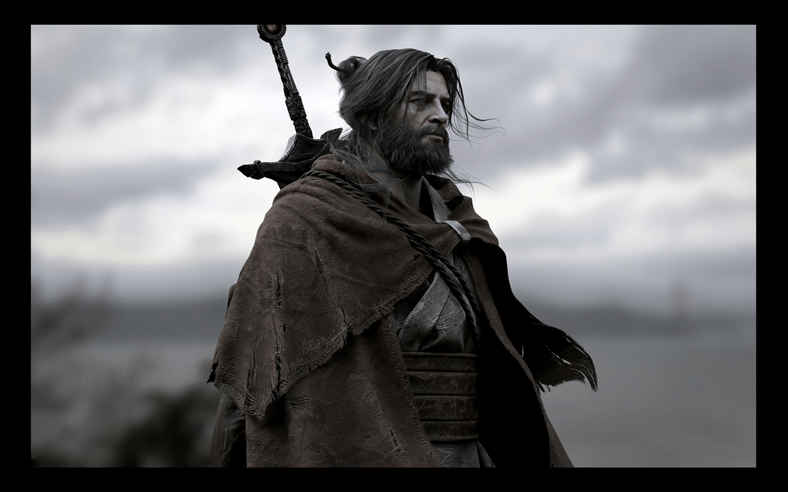

칼날 두개가 한 칼자루에 나란히 붙어있는 모양의 기괴한 쌍신검, 바라기를 지닌 남자. 한계선 이남 근처에 오두막을 두고 키보렌을 넘나들며 나가를 잡아먹는 나가 살육자이다. 아무도 다가가려 하지 않는 한계선 이남의 나가를 잡아먹으며 생활하는 것, 그러면서도 요스비라는 나가 절친을 사귀었다는 것, 영웅왕의 검이자 왕국 아라짓의 상징인 바라기를 가지고 있는 것 등 여러 수수께끼를 가지고 있는 인물이다.
케이건 드라카라는 이름은 본명이 아니며, 각각 키탈저 사냥어로 흑사자와 용을 가리키는데, 이 둘은 나가에게 멸종당한 생물들이라는 공통점이 있다. 그것을 이름으로 삼은 것을 통해 작중 많은 사람들도 케이건 드라카와 나가 사이에 도대체 무슨 일이 벌어졌는지를 궁금해하지만 끝내 캐내지 못한다. 작중 몇번이고 이 이름에 대해서 질문을 받지만, "나는 케이건 드라카요."라는 말로 대화를 끊곤 한다
